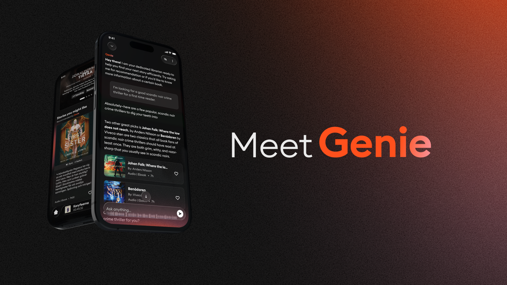
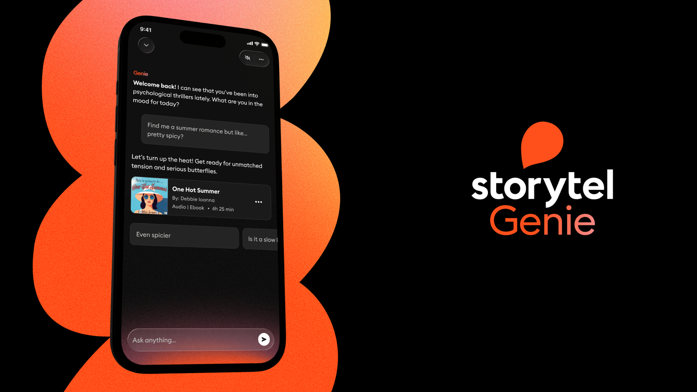
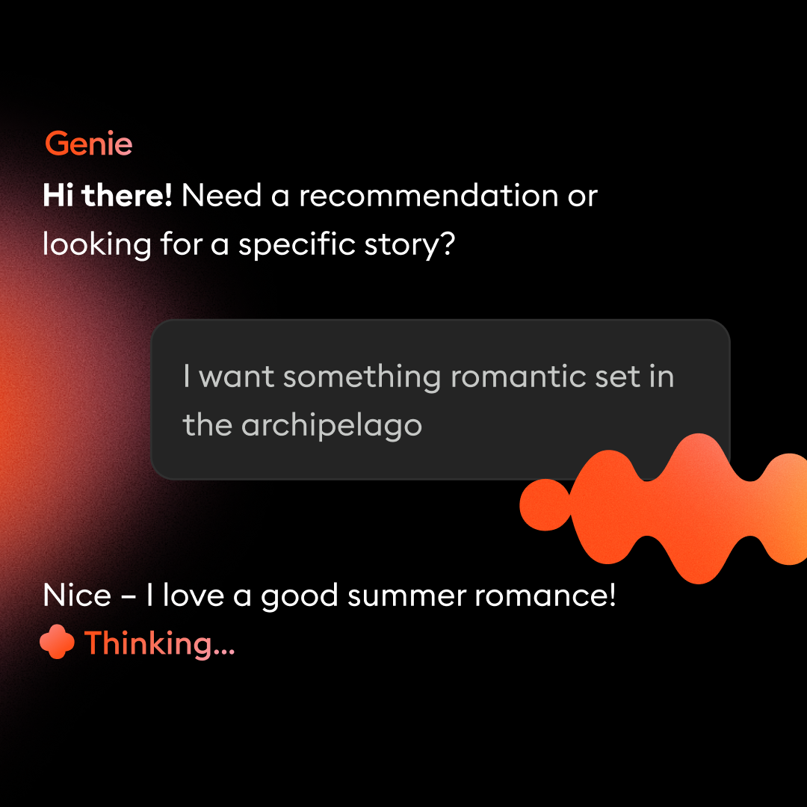
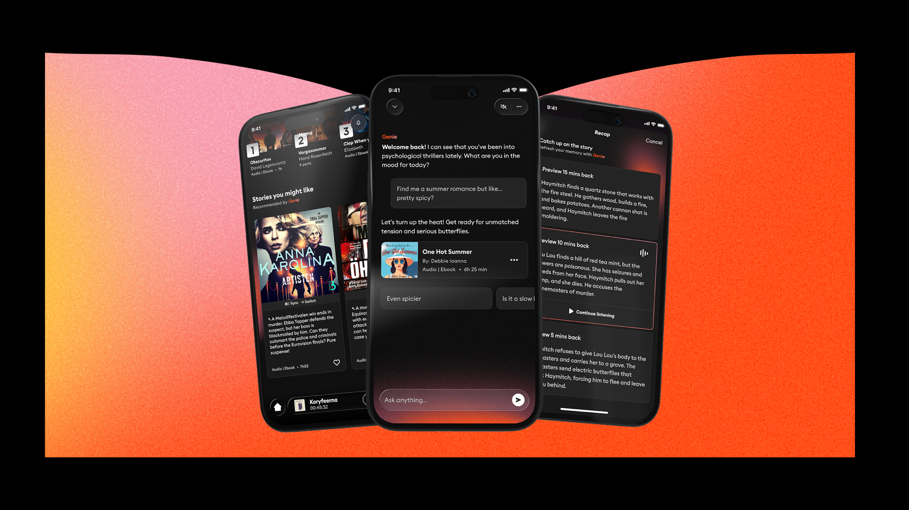
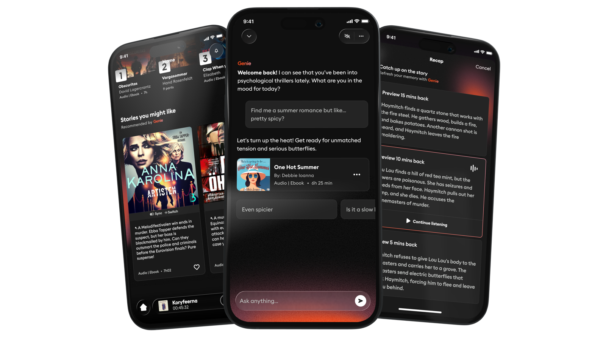
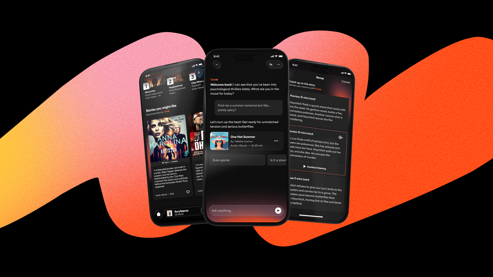
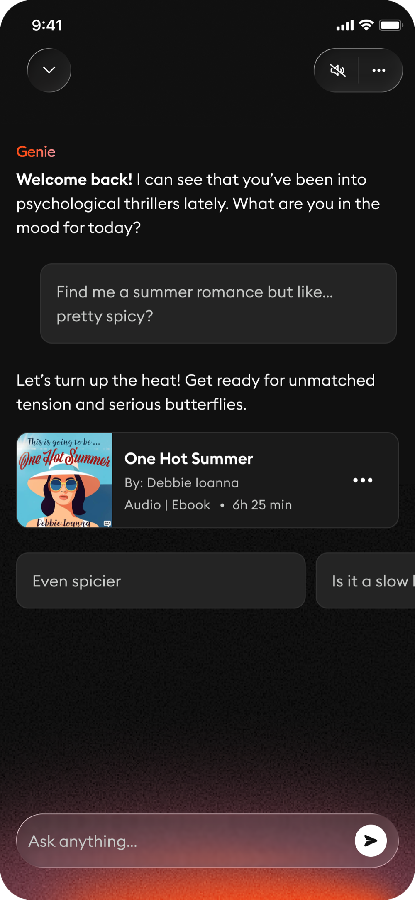
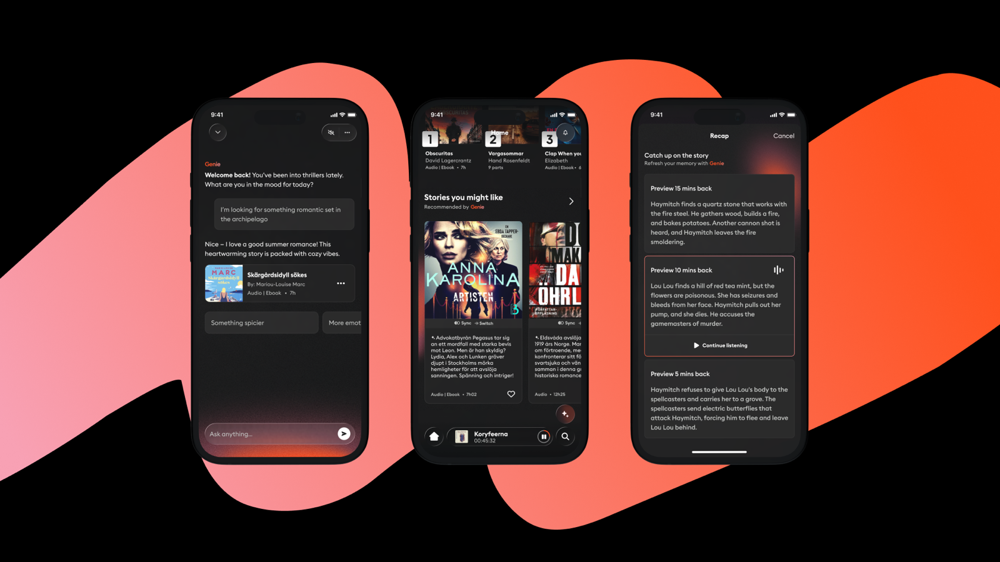

Establishing Genie — Storytel's AI brand and its first conversational companion.
A moment to get ahead of it
Storytel had begun introducing its first AI-powered features, with a conversational chat on the roadmap. Rather than let AI grow feature-by-feature without a coherent identity, we saw an opportunity to establish one upfront — a brand that could carry everything that came next.
That brand became Genie. I led product design across two tracks: building the Genie brand system into our design system and app, and designing the chat feature itself.

Two tracks, one goal
Genie Brand System
Working alongside Nina Doljak (Brand Lead), I owned the product design perspective — ensuring every brand decision was translatable to the design system, achievable by engineers, and met accessibility standards.
Genie Chat
Lead designer for Storytel's new conversational AI feature — a context-aware companion embedded in the app, designed to feel ambient and native rather than bolted on.

An identity that lived inside a product
Genie's visual language is a living, luminous presence — not a mascot or icon, but a soft flame-like blur that signals intelligence without demanding attention. My role was making that vision work across both platforms, in the design system, and at every scale.

Instead of "What is this AI doing?" — users should feel: "Oh, Genie is helping me."


A companion, not a chatbot
Genie Chat was designed as an ambient layer with multiple levels of presence — always available, never intrusive. It knows where you are in the app, what you're looking at, and what you might need next.

Presence scales from a dormant signifier to a proactive companion that emerges in context. Below: entering the chat from a recommendation prompt, and Genie surfacing proactively from the home experience.

From vision to shipped
-
1
Nov – Dec 2025
Alignment & framework
Established brand criteria, defined which features could carry the Genie label, and scoped the two workstreams with Brand and Marketing.
-
2
Jan – Feb 2026
Brand system & Chat concept
Deep collaboration with Nina on the visual system. Developed the Genie Chat presence model and began design system integration.
-
3
Mar 2026
Motion collaboration with Illo
Three-week engagement with external motion studio Illo to develop the Genie flame animation. Bridged their After Effects work with iOS/Android engineering constraints.
-
4
Mar – Apr 2026
Dogfooding & user research
Internal test release followed by qualitative user interviews across Sweden, Finland, and Norway. Findings fed directly back into design.
-
5
Apr – Jun 2026
Q2 PR launch
Refined the system for external communications and ensured visual consistency between in-app Genie and campaign materials.
